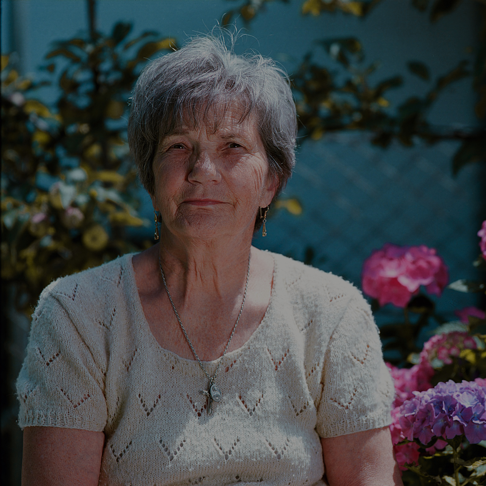
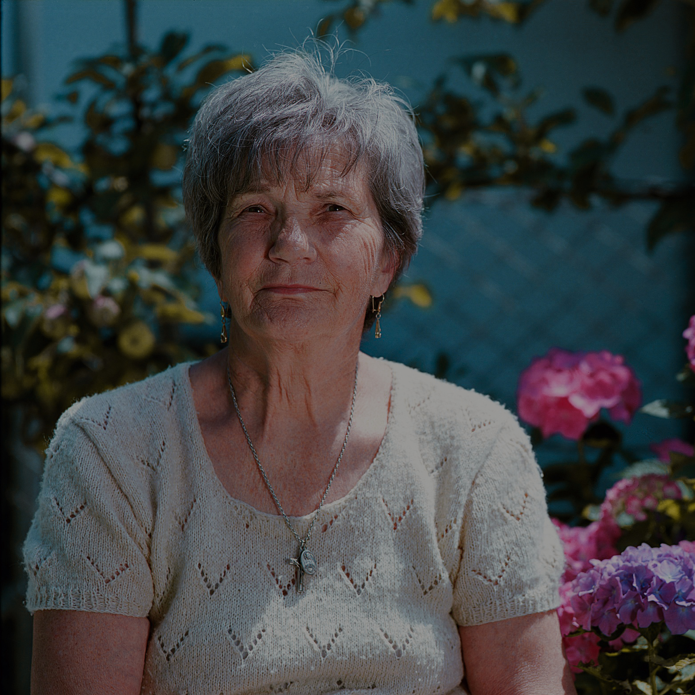

Henry, Olanda
"Sono profondamente grato al mio professore di Storia dell'Architettura Italiana che durante le sue lezioni ci ha parlato delle ville che impreziosiscono le sponde di questo lago.
Fabio, Spagna
Marie, Francia
Sofia, Spagna


Una raccolta di racconti della bellezza in cui si dà voce ai turisti
che oggi visitano la villa riproponendo le aspettative, le emozioni
e le loro storie legate a questo luogo magico
Henry, Olanda
"Sono profondamente grato al mio professore di Storia dell'Architettura Italiana che durante le sue lezioni ci ha parlato delle ville che impreziosiscono le sponde di questo lago.
Fabio, Spagna
Marie, Francia
Sofia, Spagna